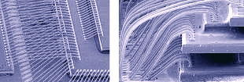
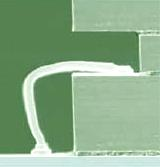

Die Stacking
Die Stacking
is the process of mounting multiple chips on top
of each other within a single semiconductor package.
Die stacking, which is also known as
'chip stacking', significantly
increases the amount of silicon chip area that can be housed within a
single package of a given footprint, conserving precious real estate on the printed circuit
board and simplifying the board assembly process. Aside from space
savings, die stacking also results in better electrical performance of the
device, since the shorter routing of interconnections
between circuits results in faster signal propagation and reduction in noise
and cross-talk.
Early applications of stacked
die involved the stacking of two memory chips on top of each other, such
as Flash and SRAM devices. Today, however, die stacking technology
has advanced beyond 'mere' memory chip stacking, and may now
involve six or more chips of varying function or technology, e.g., logic,
analog, mixed-signal, etc. Indeed, die stacking is now synonymous with
'vertical
integration',
or the integration of circuits in vertical fashion instead of the
traditional horizontal or planar approach.
Die stacking
naturally started out with a pyramid style of piling up smaller die on
top of larger ones.
The technology has advanced into something that finds no limit in the
sizes of chips to stack. It is now common to see a stack of equal-size
die, or even a larger die on top of a smaller one. One technique
developed is to place a
spacer
(a dummy
layer of silicon) between two die, so that the bond wires are not
crushed even if the top die is larger than the bottom die.
Unfortunately, the use of spacers between die add to the total package
thickness.
Tessera Inc.
pioneered the technique of folding stacked die to eliminate the need for
spacers between them, calling the process
'folded/stacked' technology.
The die are produced side by side and then folded over so that the bond
pads are independent of each other. A relieving layer is placed between
the chips to alleviate thermomechanical stresses.
The
interconnection of the stacked die within a
package presents an even more
daunting challenge, especially if wirebonding is employed. Aside from
the mechanical intricacies involved in managing the complex lay-out of
hundreds of microscopic wires subject to loop profile restrictions,
cross-talk during device operation must likewise be avoided. At times,
such as when digital, analog, and RF circuits need to be integrated
together, the solution would require the use of two interconnection
technologies (wirebonding
and flipchip bonding) to get the required results.

Figure 1.
Wirebonding complexity required by die stacking;
as reconstructed
from photos posted in www.ap.pennnet.com
Stacked die
may be interconnected using wirebonding alone, or by a combination of
wirebonding
and
flipchip
assembly.
The use of wirebonding as the exclusive means of interconnection is
somewhat restrictive, since the number of stacked die that may be
wirebonded may be limited to only three. Nonetheless, a common technique
employed for wirebonding stacked die is to wirebond each die
individually to the substrate. The conductor patterns on the substrate
take care of interconnecting the die to each other and to the outside
world.
Die that are
wirebonded to the substrate must have a 0.5-1 mm shelf or exposed area
around its periphery to allow the formation of the necessary loops
during wirebonding. Die-to-die wirebonding is also done, but this
requires the bottom die to be sufficiently larger than the top die, to
allow enough room for the wirebond connections.
Wirebonding
of stacked die could call for loop heights that are less than 100
microns, which are much more challenging than loop heights of 150-175
microns commonly seen in conventional
wirebonding of unstacked die.
Die stacking
is fraught with challenges other than those of wirebonding. One of these
is the need to keep the stack thermally and mechanically stable on the
substrate. At the same time, the resulting package must be as thin
as possible, with die interconnections that are electrically good and
reliable. Of course, the final thickness of the package depends on the
number of die in the stack. As an example, current technology would generally require a 1.4-mm
chip scale package (CSP)
to accommodate a six-die stack while a four-die stack can fit within a
1.2-mm CSP.
Wafer thinning,
thin-wafer handling,
and thin
die attach
are essential elements of successful die stacking. Wafer thinning still
involves conventional wafer backgrinding, but it must be followed by a
polishing step that relieves stresses imparted by the backgrind process to
the wafer. Wafers intended for die stacking can be thinned to just
3-6 mils, depending on the use and the wafer size. Wafers that are this
thin are already inherently weak, and require special handling and
transport systems to ensure their proper support at all times. Die attach
of very thin die, in particular, can be very challenging. The
application of preformed tape epoxy on the wafer backside prior to sawing
is one technique that facilitates die attach of very thin die.

Figure 2.
Side view of wirebonded stacked die;
Photo source:
www.kns.com
Another challenge in die
stacking is the ability to pick
known good die (KGD)
from a
wafer. The inadvertent use of defective die in die stacking will result in
yield losses and higher costs. Unfortunately, wafer-level testing is often
not enough to ensure that only KGD's will be picked for die stacking,
especially if the device involved is a complex circuit. Thus, poorly
yielding wafers that are difficult to test at wafer level are not good
candidates for die stacking.
Substrate thickness
is also an important factor in die stacking. The thickness of the
substrate adds to the over-all package thickness. This means that
for a given package height, increasing the substrate thickness will
decrease the number of die that can be stacked on it. Stacked die
that involve complex devices may require complex substrate routing, which
in turn would require additional layers or laminates within the substrate.
The core thickness and the number of laminate layers define the over-all
substrate thickness. Die stacking should therefore involve some form of
substrate engineering to keep the required number of substrate layers and
their thicknesses to a minimum.
Die stacking becomes less
attractive as the number of die to be stacked increases and as the die
involved become more expensive or complex. In such cases, engineers
are more inclined to employ
package stacking
instead of die stacking.
Primary Reference:
http://www.elecdesign.com
See Also:
System in a
Package; Wafer
Backgrind; Die
Attach;
Wirebond
HOME
Copyright
©
2005
www.EESemi.com.
All Rights Reserved.